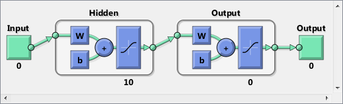
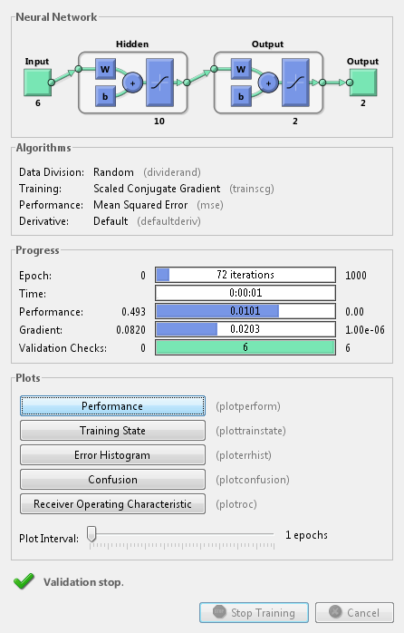
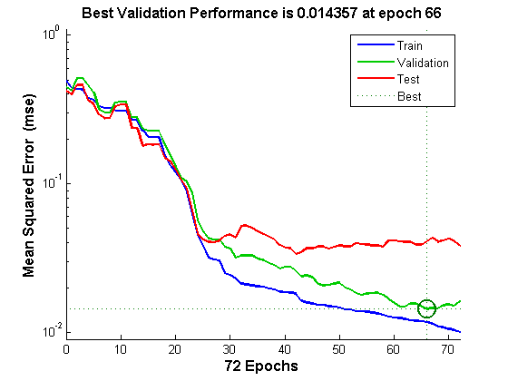
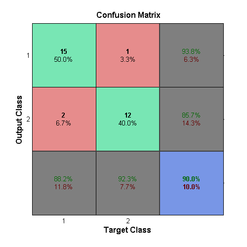
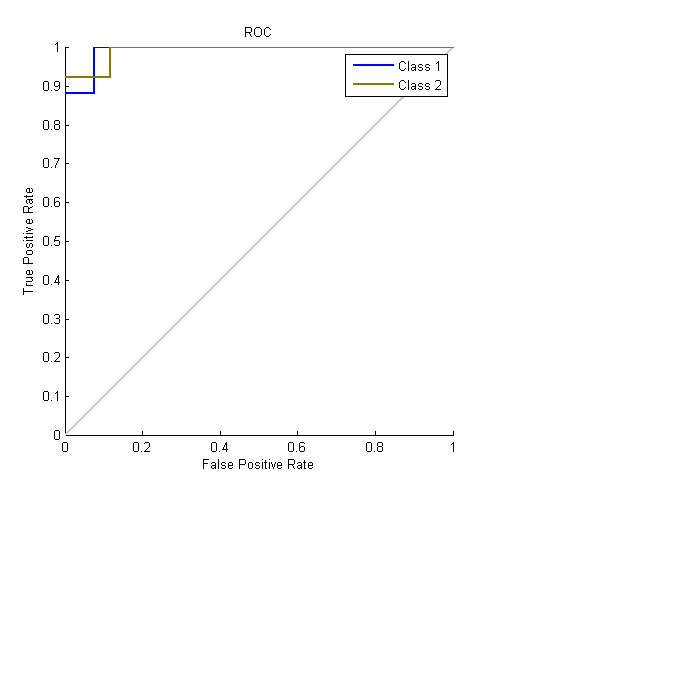

Crab Classification
This example illustrates using a neural network as a classifier to identify the sex of crabs from physical dimensions of the crab.
Contents
The Problem: Classification of Crabs
In this example we attempt to build a classifier that can identify the sex of a crab from its physical measurements. Six physical characterstics of a crab are considered: species, frontallip, rearwidth, length, width and depth. The problem on hand is to identify the sex of a crab given the observed values for each of these 6 physical characterstics.
Why Neural Networks?
Neural networks have proven themselves as proficient classifiers and are particularly well suited for addressing non-linear problems. Given the non-linear nature of real world phenomena, like crab classification, neural networks is certainly a good candidate for solving the problem.
The six physical characterstics will act as inputs to a neural network and the sex of the crab will be target. Given an input, which constitutes the six observed values for the physical characterstics of a crab, the neural network is expected to identify if the crab is male or female.
This is achieved by presenting previously recorded inputs to a neural network and then tuning it to produce the desired target outputs. This process is called neural network training.
Preparing the Data
Data for classification problems are set up for a neural network by organizing the data into two matrices, the input matrix X and the target matrix T.
Each ith column of the input matrix will have six elements representing a crabs species, fontallip, rearwidth, length, width and depth.
Each corresponding column of the target matrix will have two elements. Female crabs are reprented with a one in the first element, male crabs with a one in the second element. (All other elements are zero).
Here such the dataset is loaded.
[x,t] = crab_dataset; size(x) size(t)
ans =
6 200
ans =
2 200
Building the Neural Network Classifier
The next step is to create a neural network that will learn to identify the sex of the crabs.
Since the neural network starts with random initial weights, the results of this example will differ slightly every time it is run. The random seed is set to avoid this randomness. However this is not necessary for your own applications.
setdemorandstream(491218382)
Two-layer (i.e. one-hidden-layer) feed forward neural networks can learn any input-output relationship given enough neurons in the hidden layer. Layers which are not output layers are called hidden layers.
We will try a single hidden layer of 10 neurons for this example. In general, more difficult problems require more neurons, and perhaps more layers. Simpler problems require fewer neurons.
The input and output have sizes of 0 because the network has not yet been configured to match our input and target data. This will happen when the network is trained.
net = patternnet(10); view(net)
Now the network is ready to be trained. The samples are automatically divided into training, validation and test sets. The training set is used to teach the network. Training continues as long as the network continues improving on the validation set. The test set provides a completely independent measure of network accuracy.
[net,tr] = train(net,x,t); nntraintool
To see how the network's performance improved during training, either click the "Performance" button in the training tool, or call PLOTPERFORM.
Performance is measured in terms of mean squared error, and shown in log scale. It rapidly decreased as the network was trained.
Performance is shown for each of the training, validation and test sets. The version of the network that did best on the validation set is was after training.
plotperform(tr)
Testing the Classifier
The trained neural network can now be tested with the testing samples This will give us a sense of how well the network will do when applied to data from the real world.
The network outputs will be in the range 0 to 1, so we can use vec2ind function to get the class indices as the position of the highest element in each output vector.
testX = x(:,tr.testInd); testT = t(:,tr.testInd); testY = net(testX); testIndices = vec2ind(testY)
testIndices =
Columns 1 through 13
1 1 2 1 2 1 2 1 1 1 2 1 2
Columns 14 through 26
1 2 1 1 2 2 2 1 1 2 2 1 2
Columns 27 through 30
2 1 2 1
One measure of how well the neural network has fit the data is the confusion plot. Here the confusion matrix is plotted across all samples.
The confusion matrix shows the percentages of correct and incorrect classifications. Correct classifications are the green squares on the matrices diagonal. Incorrect classifications form the red squares.
If the network has learned to classify properly, the percentages in the red squares should be very small, indicating few misclassifications.
If this is not the case then further training, or training a network with more hidden neurons, would be advisable.
plotconfusion(testT,testY)
Here are the overall percentages of correct and incorrect classification.
[c,cm] = confusion(testT,testY) fprintf('Percentage Correct Classification : %f%%\n', 100*(1-c)); fprintf('Percentage Incorrect Classification : %f%%\n', 100*c);
c =
0.1000
cm =
15 2
1 12
Percentage Correct Classification : 90.000000%
Percentage Incorrect Classification : 10.000000%
Another measure of how well the neural network has fit data is the receiver operating characteristic plot. This shows how the false positive and true positive rates relate as the thresholding of outputs is varied from 0 to 1.
The farther left and up the line is, the fewer false positives need to be accepted in order to get a high true positive rate. The best classifiers will have a line going from the bottom left corner, to the top left corner, to the top right corner, or close to that.
plotroc(testT,testY)
This example illustrated using a neural network to classify crabs.
Explore other examples and the documentation for more insight into neural networks and its applications.